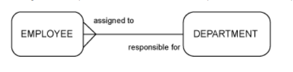
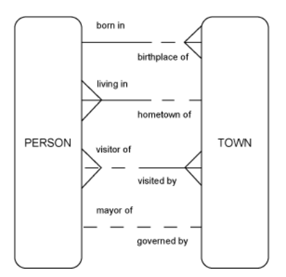
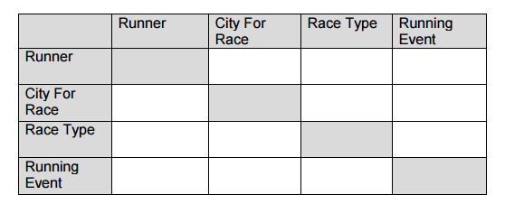
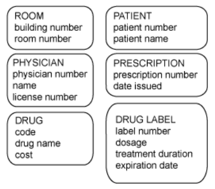

This lab will put into practice the advanced entity relationship diagraming you have seen in the lectures.

Each DEPARTMENT must be responsible for one or more EMPLOYEEs.
Each EMPLOYEE must be assigned to exactly one DEPARTMENT.
Which text corresponds to the image?
Write the appropriate relationships for the diagram below. comment on each one, do you think each is correct?


Complete the the matrix diagram as above and draw an ERD from it.
Complete section 3 quiz in ilearning
Identify which item off of the following list is the supertype entity and which items are the subtypes of that entity.
For each rule, indicate whether the rule is applicable to supertypes or subtypes.
Read the following scenario and construct an ERD that contains at least two subtypes of the entity PRODUCT. Show clearly which attributes belong to the entity supertype, and which belong to the subtypes. Identify a UID for the entity.
"Our shops sell several kinds of women’s clothing, including dresses, skirts and blouses. Of course each product has a name, a description, and a price. Oh, and sizes too: all products have a waist size. Dresses and skirts have a hem length but blouses don’t. Dresses and blouses have a chest size, but skirts don’t.”
Complete section 4 quiz.
Members of your design team have been working with the local hospital to develop a data model for their need to store information about patients, the patient's room number, the patient's doctor, drug prescriptions given, and specific drug information.
However, they all went on vacation and left you to figure out the model. They also failed to give you any of their documentation other than the entities and attributes illustrated here. Instead of going back to the hospital, which could reflect poorly on your company, you’re going to have to think about everything you know about hospitals!
Your task is in pairs to generate a list of business rules you think were used to arrive at the information shown here. Use your imagination. List 10 structural rules, 5 procedural rules, and 2 programmatic rules (rules to be addressed by computer applications in the future). State each rule as a single sentence.
Based on your set of business rules, draw the ERD.

You are a small database consulting company specializing in developing databases for the medical industry. You have just been awarded the contract to develop a data model for a database application system for a mid-size health insurance company to keep track of health claims including patient information, provider(doctor) information, information about patient visits to their doctor as well as prescription drugs prescribed to patients.
Information such as patient name, address, phone, email etc. are needed as well as who each patient’s primary care doctor is, their insurance ID number and insurance company name. We also want information on each doctor such as their specialty and what hospitals they are affiliated with as well as their phone, address etc. Regarding the hospitals themselves we will need to know where they are located and how to contact them.
The prescriptions given to each patient by a health-care provider also need to be tracked in this particular database at this time to determine claim eligibility including some basic information on the drug being prescribed to make sure there are no conflicts with a patient’s other prescriptions. We need to know each drug’s name, purpose/use and possible side effects.
Eventually, the database will be used to track trends and for some extrapolative modeling based on the accumulated data. The database will be accessible in English only right now, although plans include making it available in multiple languages eventually.
Based on the business scenario stated above you will identify the database needs, and then create a conceptual data model to support these needs.